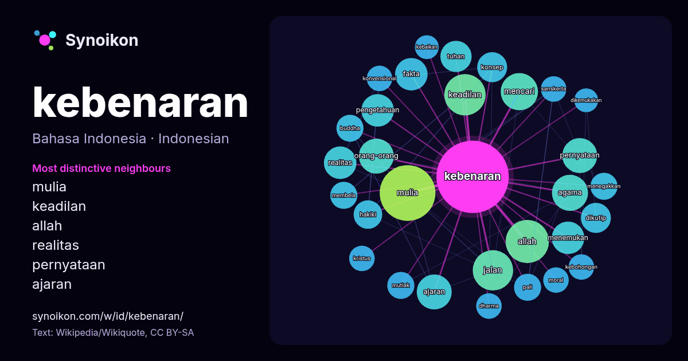

Bahasa Indonesia · kata populer
kebenaran
“truth” · Kata-kata di sekitarnya dalam 716 kemunculan dari Wikipedia, Wikiquote.

Tetangga paling khas
- mulia 34×
- keadilan 20×
- allah 13×
- realitas 13×
- pernyataan 13×
- ajaran 12×
- fakta 12×
- dikutip 11×
- hakiki 11×
- mencari 9.8×
- pali 9.8×
- pengetahuan 9.8×
- menegakkan 9.5×
- mutlak 9.4×
- tuhan 9.0×
- kebohongan 8.8×
- membela 8.8×
- sanskerta 8.7×
- dharma 8.3×
- konvensional 8.1×
× = berapa kali lebih sering daripada di teks Wikipedia umum.
Tetangga paling sering
- mulia 38
- orang 28
- allah 23
- keadilan 21
- jalan 20
- mencari 17
- agama 16
- manusia 16
- ajaran 15
- orang-orang 15
- pernyataan 15
- fakta 13
- menemukan 13
- pengetahuan 13
- realitas 13
- dianggap 12
- hidup 12
- suara 12
- tuhan 12
- dikutip 11
Dalam konteks
- keseluruhan aspek (mencoba meliputi seluruh kebenaran dari objek tersebut) Pertanyaan tentang kebenaran, banyak diperdebatkan oleh teologiwan, filsuf Wikipedia snippets · Kebenaran
- Buddhisme, Empat Kebenaran Mulia (Pali: cattāri ariyasaccāni; Sanskerta: catvaryāryasatyāni) adalah "kebenaran para orang mulia", kebenaran atau realitas Wikipedia snippets · Empat Kebenaran Mulia
- Efek ilusi kebenaran (disebut juga efek keabsahan, pengaruh kebenaran, atau efek pengulangan) adalah fenomena timbulnya kecenderungan untuk memercayai Wikipedia snippets · Efek ilusi kebenaran
- dari Empat Kebenaran Mulia. Jalan Beruas Delapan terdiri dari delapan praktik: pandangan benar, perniatan benar, perkataan benar, perbuatan benar, penghidupan Wikipedia snippets · Jalan Mulia Berunsur Delapan
- bawah tanah, kemungkinan di bawah Kapel Rosslyn. Gereja telah menekan kebenaran mengenai Maria Magdalena dan garis keturunan Yesus selama 2000 tahun. Wikipedia snippets · The Da Vinci Code
- semua yang mustahil, apa pun yang tersisa, betapa pun mustahilnya, adalah kebenaran? Doyle menulis novel ini setelah diminta oleh Joseph M. Stoddart, editor Wikipedia snippets · Empat Pemburu Harta
- tabel kebenaran adalah tabel dalam matematika yang digunakan untuk melihat nilai kebenaran dari suatu premis/pernyataan. Jika hasil akhir adalah benar semua Wikipedia snippets · Tabel kebenaran
- rangkaian informasi yang memang sengaja disesatkan, tetapi “dijual” sebagai kebenaran. Hoaks bukan sekadar misleading alias menyesatkan, informasi dalam fake Wikipedia snippets · Berita bohong
Kata lainnya
- air
- anjing
- bahasa
- emas
- iklim
- jantung
- jembatan
- kehidupan
- kekuasaan
- keluarga
- kematian
- kereta
- kerja
- kesehatan
- kesenian
- kucing
- lingkungan
- makanan
- sains
- sejarah
- tuhan
- uang
Dihitung sebelumnya pada 2026-10-09 dengan pengaturan bawaan (±5 kata, korpus sedang). Peta interaktif dapat memperbaruinya dengan data langsung.
Antarmuka diterjemahkan mesin; koreksi dipersilakan.